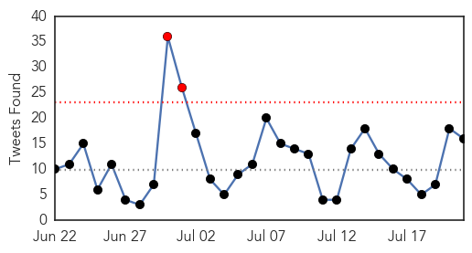
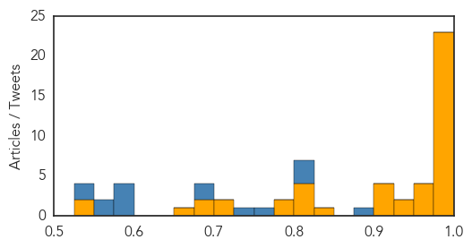

Ebola
30-Day Web Trend
2 alerts, 0 warnings

30-Day Twitter Trend
2 alerts, 0 warnings

Article Locations

Article Confidences
Top Articles:
- 1.000
- Can aerosolized vaccine protect primates against Ebola?
- 1.000
- Ebola virus still alive in Africa
- 0.999
- UNMC College of Public Health dean returns to Sierra Leone for four-week stint
- 0.999
- Africa’s Ebola epidemic has not run its course and around 30 people are still getting infected each week, says the UN special envoy for the disease « Awoko Newspaper
- 0.998
- Zambia National Broadcasting Corporation
- 0.998
- Ebola : Last four Liberian patients discharged
- 0.998
- Ebola-hit Liberia discharges four virus survivors
- 0.998
- Ebola Virus Disease Not Yet Defeated in West Africa
- 0.998
- Ebola threat not over yet, survivor Kent Brantly says
- 0.997
- Ebola deaths are still happening – and the Vatican is aiming to stop them
- 0.997
- World Bank Group President Jim Yong Kim to visit Ghana for talks on the global response to the Ebola crisis
- 0.997
- 7 Ebola Cases In Brong Ahafo Negative
- 0.997
- Ebola deaths are still happening – and the Vatican is aiming to stop them
- 0.996
- Experimental Ebola drug shelved; study explores virus clearance
- 0.996
- UNMC Public Health Dean Back in Sierra Leone for Ebola Work
- 0.995
- Last four Liberian Ebola patients discharged
- 0.991
- Nigeria pledges $1m to support Africa's fund on recovery, reconstruction after Ebola
- 0.990
- UN needs US$20 million to battle bird flu in West Africa
- 0.988
- IOM, Partners Assess Efforts to Combat New Ebola Cases in Sierra Leone
- 0.986
- Sierra Leone envoys in Makkah pray for Ebola eradication
- 0.985
- IOM, Partners Assess Efforts to Combat New Ebola Cases in Sierra Leone
- 0.982
- IOM, Partners Assess Efforts to Combat New Ebola Cases in Sierra Leone
- 0.976
- The New Dawn Liberia
- 0.973
- 14 lessons to prepare for future health emergencies from AU Support to the Ebola Outbreak in West Africa - Sierra Leone
- 0.961
- Viruses that spread from animals to humans are on the rise, so what are they and how can scientists stop them?
- 0.958
- ACT Alliance Appeal: Post-Ebola Recovery Program in Liberia – LBR151 (Re-Issued) - Liberia
- 0.954
- Ebola Doctor and Survivor Recounts His Battle in New Book
- 0.935
- Modern Healthcare Modern Healthcare business news, research, data and events
- 0.930
- Nigeria backs establishment of African Centre for Disease Control
- 0.916
- Port Health Service intensifies Ebola surveillance
- 0.907
- Ebola survivor Dr. Kent Brantly: Why my family and I returned to Liberia
- 0.905
- Sharing knowledge to combat emerging threats
- 0.900
- After Ebola and War: Electricity for Sierra Leone
- 0.842
- Nigeria to back setting up of African disease control centre
- 0.817
- Visitor from Africa sent to Bellevue in Ebola scare
- 0.808
- Brantlys navigate a vastly changed
- 0.806
- Texas couple navigate a vastly changed life
- 0.805
- After Ebola, the Brantlys navigate a very different life
- 0.792
- H.E. Koroma Zooms to One Day Ebola Summit
- 0.780
- Japanese Government presents Ebola prevention equipment to Ghana
- 0.703
- AU Stresses Coordination In Ebola Fight, Discusses With Stakeholders
- 0.702
- Equatorial Guinea hosts international conference on Ebola
- 0.678
- Quarantined ODCH Doctors, Nurses and Lab. Technicians in High Spirit
- 0.676
- Sierra Leone is in a much better shape to deal with Ebola - Sierra Leone
- 0.668
- The plight of African migrants in the Mediterranean
- 0.541
- After Ebola, the Brantlys navigate a very different life
- 0.527
- Why Africa is facing a new healthcare crisis
Top Tweets:
- 0.974
- FAQ. Ebola virus disease http://t.co/sCPaayp0hs
- 0.957
- UNMC public health dean back in Sierra Leone for Ebola work - http://t.co/2hecsKxOCo ... - Scottsbl... http://t.co/zacqaYwFMp ebola EVD
- 0.936
- Ebola Doctor Recounts His Battle with the Virus in New Book | TIME - TIME http://t.co/IbBkqSvzdR ebola EVD
- 0.919
- Liberia: Ebola Patients Discharged, Last of the Country's Latest Wave - New York Times http://t.co/fQFiJPmJgc ebola EVD
- 0.891
- LISTEN: More on a damning report served on the World Health Organisation after its failings over the ebola outbreak. http://t.co/ympOk15OW0
- 0.857
- Canadian Medical Association Journal: Ebola needed better coordinated Canadian ... - CMAJ http://t.co/NU9ISeTCMT ebola EVD
- 0.852
- Morning Break: Ebola Contained in Liberia, 'Valley of Death', Penile Looks ... - MedPage Today http://t.co/nHEs0X9aTg ebola EVD
- 0.847
- 1.Ebola virus outbreak fighters receive golden image award http://t.co/jESSKC96bg @_AfricanUnion Africaagainstebola @UNMEER
- 0.844
- L'enfant face à la maladie à virus Ebola. Journée d'étude, Dakar, 1er octobre 2014 http://t.co/9sF8b20jxX
- 0.822
- Ebola: les quatre derniers malades au Liberia guéris, six personnes encore sous surveillance https://t.co/vqkAA85xvH via
- 0.822
- int'l conference on the fight against Ebola in Africa kicked off yesterday in Malabo Africaagainstebola Ebola
- 0.808
- Feverish Traveler Recently Back to NYC from Guinea Does Not Have Ebola ... - NBC New York http://t.co/5irtnZwXQN ebola EVD
- 0.807
- The Ebola outbreak isn't over; as says, the final leg "requires the most meticulous work of all". We're still covering the outbreak.
- 0.805
- Critical Choices for the WHO After the Ebola Epidemic @JAMA_current http://t.co/bcjU5Zkz8H
- 0.803
- Together we can defeat Ebola Africaagainstebola
- 0.793
- 14 lessons to prepare for future health emergencies from AU Support to the Ebola Outbreak @_AfricanUnion http://t.co/rFNT7wC70z
- 0.791
- Ebola diaries: Lessons from previous Ebola outbreaks help with the response in Guinea http://t.co/B9ENsG32xE
- 0.789
- Health-care worker mortality and the legacy of the Ebola epidemic @thelancet http://t.co/3So0eCdHT4
- 0.754
- Visitor from Africa sent to Bellevue in Ebola scare - New York Post http://t.co/aCSUByCkp9 ebola EVD
- 0.738
- Trial of Canadian Ebola drug stopped after no overall benefit shown Tekmira TKM-Ebola http://t.co/FkUVEAXpvR
- 0.735
- Does Novavax Have the Answer for Ebola in New Trial? (NASDAQ: NVAX) - 24/7 ... - 24/7 Wall St. http://t.co/OOZdRUHVqD ebola EVD
- 0.722
- Biotech Company To Manufacture Ebola Treatment In Baltimore - CBS Local http://t.co/GxxVya8rYx ebola EVD
- 0.713
- Molecular evidence of Ebola Reston virus infection in Philippine bats http://t.co/kYC0kuZRQc
- 0.661
- Ebola. LessonsLearned from Assessments in SierraLeone and Liberia http://t.co/HrLVdbEInb
- 0.656
- 21 July - news pouch on avianflu avianinfluenza Ebola EbolaResponse MERS is here: http://t.co/kFYGVIFLX9
- 0.648
- UNMC public health dean back in Sierra Leone for Ebola work - http://t.co/sRTTK6iAab ... - Scottsbluff Star Herald http://t.co/hklqQvU6js
- 0.641
- Novavax (NVAX) Issues Positive Update on Ebola GP Vaccine as Part of WHO ... - http://t.co/yZ9OKhy7nN http://t.co/WjL80r6NUr ebola EVD
- 0.641
- Last four Liberian Ebola patients discharged https://t.co/aSCAaf4FME via
- 0.640
- Moving legacy of Ebola worker who died saving children - BBC News - BBC News http://t.co/vYtjkGX7iH ebola EVD
- 0.626
- Zero Ebola Cases in Liberia as Six discharged from Treatment Unit http://t.co/jUVKE1Q2z5 via @@MicatLiberia
- 0.610
- Investing in Comm Health Workers Is Essential for Improving Health, Strengthening Economy, Preventing the Next Ebola http://t.co/SwqFjsAA7f
- 0.596
- Decreased Ebola Transmission after Rapid Response to Outbreaks in Remote Areas, Liberia, 2014 @CDCgov http://t.co/mxSflIMMmt
- 0.576
- FORT WORTH, Texas: After Ebola, the Brantlys navigate a very different life ... - The San Luis Obi... http://t.co/DHBtJ0TpU4 ebola EVD
- 0.573
- Tekmira suspends work on Ebola drug, will change name | Fox News - Fox News http://t.co/VJ5LF8A75d ebola EVD
- 0.556
- Human–Bat Interactions in Rural West Africa Ebola zoonoses http://t.co/a3xCdyOt0Z
- 0.549
- Ebola Response in Liberia and SierraLeone: evaluation report for the Disasters Emer Committee http://t.co/yTnNvdthLs
- 0.542
- Gaithersburg company to manufacture Ebola drug - The Frederick News-Post ... - Frederick News Post... http://t.co/YziGGVxwOr ebola EVD
- 0.534
- Guinea traveler eyed for Ebola in NYC: officials - NY Daily News - New York Daily News http://t.co/sIAQ44iZH9 ebola EVD
- 0.512
- Ebola survivor Dr. Kent Brantly: Why my family and I returned to Liberia ... - http://t.co/7z14zqb6Cu http://t.co/ZXiFzQ8vEO ebola EVD
Unknown
30-Day Web Trend
0 alerts, 0 warnings

30-Day Twitter Trend
0 alerts, 0 warnings

Article Locations

Article Confidences

Top Articles:
- 0.997
- S. Korea reports no new MERS cases for 16th day
- 0.996
- (LEAD) S. Korea reports no new MERS cases for 16th day
- 0.994
- (LEAD) S. Korea reports no new MERS cases for 16th day
- 0.975
- Normality returns to hospital at centre of Korea MERS crisis
- 0.969
- MERS-hit hospital resumes service - Regional
- 0.945
- How Serious is malaria disease in the Gambia during the raining season
- 0.933
- 10-40% Food-Borne Listeria Cases in Texas Go Untracked
- 0.925
- New York City issues advisory after imported Brucella melitensis cases expose microbiology laboratory workers
- 0.891
- Who will rescue Nigeria health sector from total collapse?
- 0.874
- KBS World Radio
- 0.870
- Steer clear of armadillos
- 0.831
- Drug cocktails can stop sexual transmission of HIV, researchers say
- 0.816
- Wyoming issues tularemia warning
- 0.810
- B.C. patient questions accuracy of Lyme disease test used by province
- 0.798
- Anthrax update: Spread of infection has been halted in Bulgaria
- 0.787
- Sarangani supports call to end HIV/AIDS
- 0.784
- Ghana adopts tough measures to contain bird flu
- 0.780
- Why Florida Leprosy Cases Are on the Rise
- 0.773
- Malaria Rears Its Ugly Head in Puerto Rico
- 0.762
- No to health ministry
- 0.759
- Don’t deprive hajj pilgrims of life saving health, experts warn
- 0.733
- Doctors and medical students in India should stop wearing white coats
- 0.732
- African Health Ministers urge quick establishment of Africa CDC
- 0.724
- Rise of leprosy cases in Florida blamed on armadillos
- 0.690
- High Tea salmonella outbreak at Melbourne’s Langham Hotel hits 34 people
- 0.687
- Salmonella outbreak linked to Melbourne hotel's high tea
- 0.687
- Salmonella outbreak linked to Melbourne hotel's high tea
- 0.670
- Number of foreign visitors to South Korea drops
- 0.655
- Health Officials: Jamaica Pond Closed Due to Hazardous Water Conditions
- 0.655
- All 28 individuals test negative for anthrax over possible outbreak in Bulgaria’s Varna District
- 0.654
- Teen's HIV remission raises hope of cure for Aids, Europe News & Top Stories
- 0.654
- French Teen’s HIV Infection Under Control For 12 Years, Even Without DrugsPhenomenica
- 0.652
- La Crosse – WKBT News8000.com
- 0.650
- Less foreign visitor to S.Korea in June on MERS shock
- 0.649
- Sorry, deze pagina kon niet gevonden worden.
- 0.647
- Philstar Mobile
- 0.644
- Number of foreign visitor to S.Korea tumbles in June on MERS shock
- 0.641
- Number of foreign visitor to S.Korea tumbles in June on MERS shock - Xinhua
- 0.632
- Confirmed Case of Hantavirus in Texas Panhandle Prompts
- 0.627
- Salmonella linked to Melbourne hotel: report
- 0.623
- WSU News Washington State University
- 0.623
- Apohealth Diarrhoea Relief Plus (Loperamide hydrochloride and Simethicone) Drug
- 0.621
- Meeting the Triple Aim with new pain management protocols
- 0.618
- MRC hands over borehole to Fajikunda Health Centre
- 0.603
- Offre d'emploi industrie pharmaceutique
- 0.594
- Antiretrovirals credited for TB decline
- 0.583
- Studies confirm that early drugs halt AIDS, prevent spread - KVOA
- 0.583
- Can Your Community Hospital Handle ... This?
- 0.582
- Health ministry warns doctor group, drug body over expired polio vaccines
- 0.577
- WHO receives Turkmenistan State award for collaboration in public health
Showing top 50 articles...
Top Tweets:
- 0.666
- RT: Vaccinemakers have fingers crossed for this flu season http://t.co/B66aPjbY2A via Flu Vaccine FluSeason